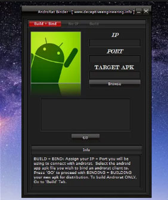
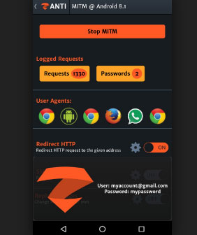
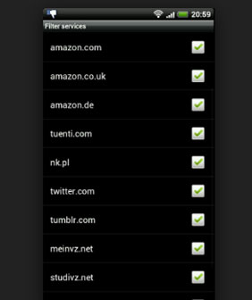
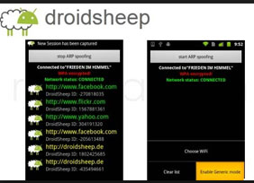
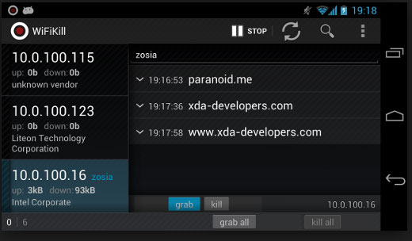
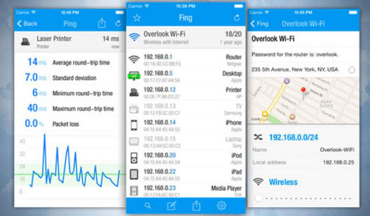

AndroRAT stands for Android and RAT (Remote Administrative Tools). This top free hacking tool was released a long time ago as a client/server application. The app aims to give you the control of the Android system remotely and fetch the information from it. This Android app runs as a service right after the boot. So, a user doesn’t need to interact with the service. The app provides you the ability to trigger the server connection by a call or SMS.
The features in this useful Android hacking app include collecting information like contacts, call logs, messages, and location. The app also allows you to remotely monitor received message and state of the phone, making a phone call and sending texts, taking pictures from the camera, opening URL in the default browser etc.
The second entry on our list of top hacking Android apps for 2018 is Hackode. It is an app which is basically a collection of multiple tools for ethical hackers, IT specialists, and penetration testers. In the app, there are three modules — Reconnaissance, Scanning, Security Feed — available in the application.
With this app, you get the functionalities like Google hacking, SQL Injection, MySQL Server, Whois, Scanning, DNS lookup, IP, MX Records, DNS Dif, Security RSS Feed, Exploits etc. It’s a great Android hacking app to start with and it doesn’t ask for your private information to operate.
zANTI is a reputed Android hacking suite from Zimperium. This software suite comes with multiple tools that are widely used for penetration testing purposes. This mobile penetration testing toolkit allows the security researchers to scan a network easily. This toolkit allows the IT administrators to simulate an advanced hacking environment to detect multiple malicious techniques.
zANTI could be called an app that brings the power of Backtrack on your Android device. As soon as you login into zANTI, it maps the entire network and sniffs the websites being visited along with their cookies — thanks to ARP cache poisoning on devices.
The various modules in the app are network mapping, port discovery, sniffing, packet manipulation, DoS, MITM, and more.
cSploit calls itself the most advanced and complete IT security toolkit for the Android operating system. It’s a tool that enumerates local hosts, finds vulnerabilities and their exploits, cracks Wi-Fi password, installs backdoors, etc.
FaceNiff is a top Android hacking app that allows you to intercept and sniff your WiFi network traffic. This tool is widely used to snoop into people’s Facebook, Twitter and other social media websites using your Android device. This hacker-favorite tool steals cookies from WiFi network and gives an attacker an unauthorized access to victim’s account.
FaceNiff is developed by Bartosz Ponurkiewicz — the same developer who wrote Firesheep for Firefox hacking on the desktop.
Shark for Root is an advanced tool for security experts and hackers. This tool works as a traffic snipper and works on Wi-Fi, 3G, and FroYo tethered mode. One can also use the tcpdump command for this free hacking app for rooted Android devices.
Droidsheep is an effective hacking app developed for security analysts interested in playing with Wi-Fi networks. The app has the ability to hijack the web session profiles over a network and it works with almost all services and websites.
As you fire up the Droidsheep app, it acts a router that monitors and intercepts all the Wi-Fi network traffic and fetches the profiles of active sessions. With this app, one can sniff Facebook, LinkedIn, Twitter and other social media accounts.
DroidSheep Guard, another version of app, helps you to detect ARP-Snoofing on the networks i.e. the attacks by FaceNiff, Droidsheep, and other software.
DroidBox is an app that offers dynamic analysis of Android applications. Using the app, one can get a wide range of results about the hashes for the APK package, network traffic, SMS and phone calls, information leaks via different channels etc.
This top Android hacking application also gives you the ability to visualize the behavior of an Android app package.
APKInspector is an app that allows you to perform reverse engineering tricks. With this app, you can get the graphic features and analysis functions for the users to get a deep insight. This powerful Android hacking tool helps you get the source code of any Android app and visualize the DEX code to erase the credits and license.
One of the most popular network scanning apps for desktop can also be used on the Android operating system. Nmap works on both non-rooted and rooted phones. If you are a beginner Android hacker, this hacking app is a must-have.
SSHDroid is an SSH server implementation developed for Android that allows you to connect your Android device to a PC and run commands like ‘terminal’ and ‘adb shell’ and edit files. It provides an extra security later when you are connecting to a remote machine.
The app provides features like shared-key authentication, WiFi autostart whitelist, extended notification control etc
Wi-Fi Kill is a great hacking tool for rooted Android devices. Using this tool, one can disable a device’s internet connection if it’s connected to your network. In reality, it blocks the packet data going to a device. Thanks to its simple interface, any novice user can use this Android hacking app. Find the apk for this tool using the link given below:
Kali Linux NetHunter is the first open source penetration testing platform for Android-powered Nexus devices and OnePlus One. It supports Wireless 802.11 frame injection, HID keyboard, 1-click MANA Evil Access Point setups, BadUSB MITM attacks. etc.
This popular network scanner app for Android is used by hackers and security professionals to discover which devices are connected to the internet, map devices, locate security risks, find intruders, solve network problems, etc. It comes with more than a dozen free network tools for making your job easier.